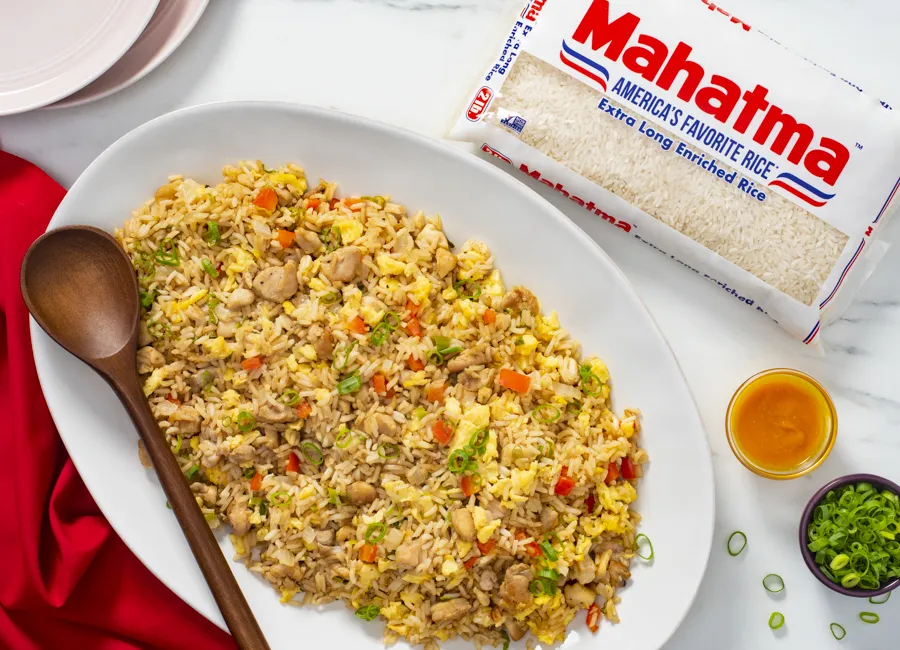

Arroz Chaufa

Descripcion
El Arroz Chaufa es un delicioso y popular plato de la gastronomía peruana, que combina influencias chinas con ingredientes locales para crear una explosión de sabores. Este exquisito plato se caracteriza por su arroz salteado con trozos de carne, mariscos o pollo, junto con verduras frescas y sazonado con una mezcla de sabores únicos. El resultado es un plato colorido y sabroso que deleita a los paladares de todo el mundo.
Ingredientes
- 2 Tazas de arroz blanco (Preferentemente del dia anterior)
- 4 Huevos
- 1 Pimenton maduro
- Cebollita china
- Carne o Pollo
- Aceite vegetal
- 2 cucharaditas de kion
- 4 cucharaditas de Sillao o Salsa de soya
Pasos
- En caso de que no tenga arroz del dia anterior, poner a cocer las 2 tazas de arroz, lo ideal es poner 2 tazas de agua por cada 1 de arroz.
- Batir 3 huevos, freirlos con aceite a fuego lento y trocearlos en cubitos
- Cortar el pimenton y la Cebollita china en cubitos finos
- Freir el pollo en cubitos, aqui hagalo con kion a gusto
- Ahora que tiene todo a mano, agarre una sarten amplia y agregue el huevo restante, y exparsa para triturarlo
- Una vez que el huevo empiece a cuajar, agregar el arroz, el huevo troceado, la cebollita y el pimenton en capas
- Mezcle lentamente para evitar maltratar el arroz, y agregue sillao a gusto
- Sirva en platos hondos y provecho!